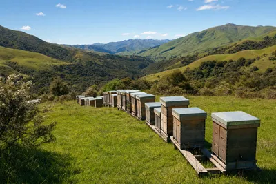

호주, 약제 안 듣는 꿀벌응애 세 주로 번져…빅토리아 취미 양봉가 '벌통 잃었다' 잇따라
뉴사우스웨일스·퀸즐랜드 이어 5월 빅토리아서 피레스로이드 내성 확인 — 처리 뒤 응애 수 다시 세고 약제 돌려 쓰라
검토용 미리보기입니다. 아직 공개되지 않은 기사를 포함하고 있으며, 검토 의견은 발행인에게 알려 주세요.
2026년 10월 14일 수요일
뉴질랜드를 비롯한 해외 양봉 소식
글 7편
뉴사우스웨일스·퀸즐랜드 이어 5월 빅토리아서 피레스로이드 내성 확인 — 처리 뒤 응애 수 다시 세고 약제 돌려 쓰라
6월부터 나라 이름을 비율 순서로 — 이탈리아 기준은 저온살균 금지·수분 17% 미만
영국은 켄트에 몰리고 저지섬은 작년보다 50% 많아 — 아일랜드는 추적기 달아 둥지 찾아
1998년부터 쓴 국가 관리계획 개정 — 벌통 주인 바뀔 때 신고 손보고, 거듭 어기면 더 강하게 제재
양봉가 1,948명 조사 — 2021년부터 줄던 손실 반등, 원인은 응애·굶주림·여왕벌·말벌 순
9월 13~21일 설치 뒤 벌통 안 온도·습도·이산화탄소·소리 자료가 들어오기 시작 — 연말까지 100통으로 늘릴 계획
· 대표 그림은 AI 생성

반덤핑 관세 위에 301조 관세 더해 16~23% — 걸프 해안 꿀 흐름 짧아 매입가 상승